Doanh nghiệp Việt mất hàng tháng để có một tờ chứng nhận. Tổ chức cấp chứng nhận vật lộn với hồ sơ giấy.

02 / 03 · Doanh nghiệpAI thay người soạn hồ sơ. Quản lý sản xuất tự động. Hỗ trợ truy xuất nguồn gốc và quảng bá Halal.
AI tự sinh 13 loại giấy tờ Halal — sổ tay HAS, chính sách, SOP, sơ đồ sản xuất, danh sách nguyên liệu. DN không phải soạn tay từng giấy.
Theo dõi hồ sơ tự động trong suốt quá trình sản xuất. Cập nhật, lưu trữ, đối chiếu — không email qua lại, không bỏ sót.
Hệ thống chuẩn bị sẵn hồ sơ truy xuất từ nhà cung cấp · nguyên liệu · công đoạn · lô sản phẩm — đáp ứng yêu cầu kiểm tra của tổ chức cert.
Hỗ trợ đưa thông tin sản phẩm lên cổng thông tin Halal — tăng tiếp cận khách hàng quốc tế, mở thị trường xuất khẩu.
Đánh giá hồ sơ nhanh hơn 80-90%. Quản lý cert tự động, có cảnh báo. Cấp và thu hồi cert hoàn toàn tự động.
Hồ sơ tự sắp xếp, checklist tự chạy, AI gợi ý điểm còn thiếu. Một auditor đánh giá được nhiều DN hơn — không cần tăng nhân sự khi mở rộng.
Báo cáo định kỳ tự gửi. Cảnh báo khi: cert sắp hết hạn · DN không nộp báo cáo định kỳ · DN dùng nguyên liệu chưa có giấy phép.
Mọi DN trên một dashboard duy nhất. Không phải lưu trữ, đối chiếu hàng nghìn tờ giấy của nhiều doanh nghiệp khác nhau.
Cấp phát · thu hồi · đối chiếu xác thực — hoàn toàn tự động. Auditor chỉ làm nhiệm vụ kiểm tra cuối cùng trước khi đồng ý.